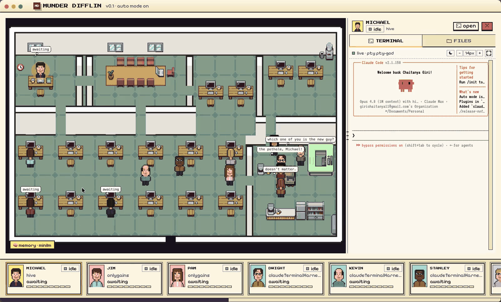

Munder Difflin is two products in one repo: a 19,000-line multi-agent orchestration core that runs real CLI agents in real PTYs with memory, mailboxes, telemetry and operator control — and a 5,400-line Pixi.js game that draws it as sprites walking around a paper company. The core is the reason to fork. The game is what we replace with projects, backlogs, and a supervision surface.
The load-bearing finding of this review: the two halves do not know about each other.
Nothing in src/main references a character, seat, or desk — the game exists entirely
renderer-side, behind one typed IPC bridge. A new frontend is an additive project, not a rewrite.
src/main — engine, UI-agnosticscene/office + 304 KB of sprites
grep -c "character\|seat\|desk-" src/main/index.ts → 0 · matches elsewhere in src/main are the word
"metacharacter" in pty.ts/cliInstall.ts
P0–P4 shipped as planned. The IDE decision was reversed after P4: the built-in editor is out of product scope and was removed. The inspector's diff rail and the terminal-link file viewer stay — supervision surfaces, not an IDE.
Every agent is a real CLI process in a PTY, and every agent is also an avatar. The floor is the primary navigation surface: you click a sprite to select an agent, and a right-hand panel gives you its terminal.

docs/media/home-screen.png.
| What you see | What it actually is |
|---|---|
| Sprites at desks | One node-pty process per avatar, 10 supported CLIs |
| Avatar walks to a station | A PreToolUse hook payload over a Unix socket |
| Envelope flies desk → desk | Router moved a JSON file from one agent's outbox/ to another's inbox/ |
| Michael in the corner office | The "god" orchestrator — an ordinary CLI agent with a very long system prompt |
| Speech bubbles, cafeteria lines | Decoration. No signal. |
| Bottom card strip | The only fleet-wide view: 6 agents visible, no sort, no filter |
A "Command Center" panel already holds 11 tabs — terminal, tasks, ask-me, triggers, memory, activity,
skills, workers — including a dependency-aware kanban (TasksKanban.tsx, 466 lines). The
productivity product is half-built and buried behind the game. That is the opportunity.
Two data planes feed one renderer through a single typed bridge (window.cth,
src/preload/index.ts, 1,379 lines). Everything the game draws, it draws from that bridge — so a
second frontend consumes the same API with no engine changes.
Slack messages, generic webhooks, scheduled missions and an adaptive heartbeat all drive agents with no UI involved. The floor is a viewer, not a controller.
src/main/slack.ts · webhook.ts · index.ts (missions)
Pause and tool-gating return permissionDecision:'deny' from PreToolUse; guidance
returns additionalContext; a clean stop returns {continue:false}. No keystrokes,
no interrupts.
src/main/control.ts
Exactly one drain loop may type into a live agent's terminal, gated on idle status, boot grace, and whether you have unsent text. Any new UI enqueues; it never writes.
docs/message-queue.md · hooks/useHive.ts effect #4
Line counts are measured, not estimated. "Port" means the logic is right but the presentation is pixel-art and gets restyled.
| Verdict | Area | Lines | Why |
|---|---|---|---|
| Keep as-is | src/main/** — pty, hive, hooks, control, breaker, telemetry, memory, git, slack, webhook, updater |
19,197 | The product we are forking for. Zero UI coupling. Track upstream here. |
| Keep as-is | src/preload/** + src/shared/** |
5,170 | The API contract and provider presets. Extend additively for projects. |
| Delete | src/renderer/src/scene/** — OfficeFloor, Character, Camera, cast, pathfinding, envelopes, bubbles, tilemaps |
5,382 | The game. Also removes the Pixi.js dependency. |
| Delete | assets/ tilesets + character sheets · OfficeThemePicker · SpritePortrait · mockEvents.ts |
495 + 304 KB | Clears the LimeZu non-commercial asset licence — see risks. |
| Rewrite | design/tokens.css · PixelPanel / PixelButton / PixelBadge · DESIGN.md |
~810 | Press Start 2P and "never bold" are hard constraints against a dense tool. New token set. |
| Port | TasksKanban · AskMeTab · ToolWaterfall · ThreadsPanel · MessageQueueComposer · WorkersTab |
1,877 | Right logic, wrong skin. These become the backlog, inbox and inspector. |
| Port | hooks/useHive.ts · terminalPool · PtyTerminalView |
2,269 | useHive is the client-side orchestration loop — 16 effects of hard-won lifecycle handling. Do not rewrite it; lift it out of the floor's assumptions. |
| Deleted in P5 | ide/** — Monaco editor, file tree, tabs, save (decision reversed after P4) · components/git/** stays — the inspector's changes tab uses it |
1,547 | Out of product scope: the harness supervises code, it does not edit it. Monaco's removal cut the renderer bundle from 10.9 MB to 4.3 MB. |
| New | App shell · project switcher · backlog board · fleet table · agent inspector · needs-you inbox | — | The four surfaces below. |
These are drawn in the design system I am proposing for the fork: dense dark neutrals, one accent kept from the brand, and the existing status colour semantics preserved (working amber, thinking teal, blocked red, waiting blue) so the information design survives the sprite deletion. Each mock lists the IPC calls that already feed it.
Projects are first-class and own a repo path; the backlog is the existing task ledger with a project, a rank, and
a structured dispatch contract. Assigning a card to an agent is what the orchestrator does today by writing an
assignee — here you can do it directly, or hand the whole column to the dispatcher.
curve_store and reconcile totals against EOD snapshots.
docs/curves.md first. Do not call the vendor API.
wired to: hiveTasks() · hiveAddTask() · hivePatchTask() ·
hiveRegistry() · telemetrySnapshot() · new projects:list/upsert
Every column here already exists in fleet.json, which the main process rewrites every 8 seconds, or
in the telemetry collector. Today only the orchestrator agent reads it; a human never sees it. This is the single
highest-value screen in the fork, and it is nearly free.
wired to: fleet.json (id, role, cwd, breaker, tokens, usd, lastTool, lastActiveSecAgo, inboxBacklog) ·
telemetryUsage() · agentContext() · onBreakerState() · listPtys()
The screen you described: what is this agent doing, is it on track, and how do I guide it without breaking its turn. Three panes — what it did (tool timeline), what it is saying (terminal), and what I can do about it (intervene). Every control maps to an existing IPC call.
3 Bash calls in a row on the same migration — the breaker's repeated-tool counter is at 3 of 8.
Arrives as additionalContext on the next hook boundary. No keystrokes, no interrupt.
controlPause · controlGateTool · controlAutoDelivery · controlHalt
wired to: telemetrySpans() · onPtyData() · agentContext() ·
controlSteer() · controlPause() · controlGateTool() ·
controlHalt() · onBreakerState() · gitStatus()/gitDiff()
This already exists as the "Ask me" tab: when an agent can only proceed with a human, the orchestrator sets the
card to blocked and appends the ask to the card's humanQA[] array — the decision trail
stays on the task forever. What it adds here is the cost of not answering: the dependent work that is
frozen behind you.
wired to: hiveTasks() humanQA[] · hivePatchTask() ·
hiveSend() (answer is mailed to the dispatcher) · onApprovalRequest() ·
dependents walk already implemented in AskMeTab.tsx
Partially descoped after P4. The diff-rail half of this mock shipped in P2 as the inspector's changes tab. The editor half — Monaco, file tree, tabs, save — was dropped with the IDE reversal; review happens in your own editor.
You want the built-in IDE kept, so here it is inside the new shell. It earns its place on the supervision argument: "is this agent on track" is often really "show me the diff". The editor, file tree, commit graph, branch compare and guarded checkout all exist today and all read through main's brokered fs/git bridges — so this is a restyle, not a rebuild.
Checkout refuses on a dirty tree — the guard already exists in git.ts.
wired to: gitStatus() · gitDiff() · gitLogGraph() ·
gitCommitFiles() · gitCompareRefs() · gitCheckout() ·
gitWorktrees() · listDir()/readFile()/writeFile() ·
existing ide/** + components/git/CommitGraph
Less than you would guess, and you chose to keep it in the hive rather than move to SQLite or sync an external
tracker. The task ledger already carries status, assignee, dependencies, priority, human Q&A
and a result. What it has no concept of is a project — today project is a renderer-only
display string set to basename(cwd), and it never reaches the hive.
export interface HiveTask { id: string; title: string; description?: string; assignee?: string; // agent id status: 'todo'|'doing'|'blocked'|'done'; dependsOn: string[]; priority: number; createdAt: string; humanQA?: HumanQA[]; // ask → answer trail result?: string; slack?: { channel; thread_ts }; webhook?: { tokenHash }; } // no project. no ordering key. no contract.
// NEW FILE — hive/projects.json, written only by main export interface Project { id: string; name: string; repoPath: string; // agents' cwd isolation: 'shared'|'worktree-per-agent'; members: string[]; // agent ids budgetUsd?: number; archived?: boolean; } // hive/tasks.json — four optional fields interface HiveTask { /* …unchanged… */ projectId?: string; // undefined = intake rank?: string; // lexicographic backlog order labels?: string[]; contract?: { objective, output, tools?, boundaries? }; }
The hive is a git repo committed by exactly one writer. Old tasks parse unchanged, a rollback is a file revert, and the orchestrator keeps reading the same JSON it reads today. A SQLite move would fork the audit trail for no gain at this scale.
Each agent has a cwd, optional per-agent git worktree, and its own memory. "Agents working on
different projects" is the current spawn model — we are naming and grouping it, not inventing it.
On first launch: create a project per distinct agent cwd, set projectId on every
task from its assignee's cwd, and rank by existing priority then createdAt. Anything
unmatched lands in Intake.
The orchestrator's prompt already tells it to dispatch as OBJECTIVE / OUTPUT / TOOLS / BOUNDARIES. Today that structure is prose in a message body. Storing it on the card makes it reviewable and editable before dispatch.
This matters for the UI design: guidance must not look like typing into a terminal, because it isn't. The
ControlRegistry parks your text and the hook server hands it to the agent at its next lifecycle
boundary as extra context. The agent never gets interrupted, and nothing lands mid-keystroke.
Pause / gate a tool → PreToolUse returns deny, immediately and race-free.
Guide → additionalContext. Stop cleanly →
{continue:false} at the next boundary, instead of killing the PTY.
healthy → steering → constrained → stopped, tripped by token velocity, repeated tools, error storms or budget. Surfacing its level per agent turns it from a hidden guard into a fleet health column.
Show that guidance is pending until the next boundary, and show what was injected afterwards.
Today pendingSteers is a number nobody displays — a silent lever feels broken.
Rules in main (deterministic, testable): an explicit assignee you set; capability/role match against the registry; pull the top-ranked ready card when a project member goes idle; never route outside a project's members; refuse a card with no contract. The dispatcher agent keeps: decomposing a vague ask into cards, triage, cross-agent conflict resolution, what to escalate to you, and sign-off. Rules run first; the agent handles what falls through.
Ordered to your build ranking — Fleet, inspector, backlog, needs-you. The data-model change lands in P3, once there is a UI to justify its exact shape. The IDE follows in P5 now that you are keeping it, and the assignment work lands last because it needs an eval harness before anyone touches that prompt.
| Phase | Work | Outcome | Size |
|---|---|---|---|
| P0 | Fork hygiene. Fork with upstream wired, rename to AgentFleet, delete scene/**, the sprite assets, the theme picker and the mock event loop. Drop Pixi. Boot into a placeholder shell that lists agents and opens a terminal. |
A clean, buildable fork with no game and no non-commercial asset licence. | 1–2 days |
| P1 | Shell + Fleet. New token set and app frame; the fleet table straight off fleet.json and the telemetry collector, with sort, filter and drill-in. Your first pick. |
One screen answering "is the floor healthy?" — from data that exists today and nobody can see. | ~1 week |
| P2 | Inspector + intervention. Tool timeline from telemetrySpans(), live terminal, context and spend gauges, the four control levers, visible pending-steer state — plus the read-only diff rail (changed files, per-file diff, branch commits), because "on track?" is usually "show me the diff". |
Look over an agent's shoulder, read what it changed, and guide it without breaking its turn. | ~1 week |
| P3 | Projects + backlog. projects.json + IPC + one-pass backfill; project switcher; backlog board with rank, contract editor and dispatch; per-project fleet filter and cost rollup. |
Projects and backlogs become the organising unit instead of basename(cwd). |
1–2 weeks |
| P4 | Needs-you inbox. Port AskMeTab with the frozen-dependents cascade; desktop notifications; keep Slack ingress as the answer-from-phone path. |
You are the bottleneck only when you actually are. | 2–4 days |
| P5 | Drop the IDE (scope reversed after P4). Delete ide/**, every IDE button, the IDE store state, dead FilesTab/FileTree, and the Monaco dependencies. The inspector's diff rail and the terminal-link file viewer stay. |
The harness supervises code instead of editing it; renderer bundle −60%. | done |
| P6 | Hybrid assignment. Build the replay harness over recorded log.jsonl first, then the deterministic rules in main, then retune the dispatcher prompt from "run the office" to "work this backlog" and teach it projectId. |
Assignment is predictable where it should be and smart where it must be. | ~1 week + evals |
| P7 | Hardening. Per-project windows and budget caps, CI watcher per project, session restore, then delete whatever nobody opened. | Daily-driver quality. | ongoing |
Per your stacked-diff convention each phase is a stack: production code first, tests on a dependent branch,
AGENTS.md/docs last. P0 is the exception — a single deletion commit reviews better whole.
The dispatcher's behaviour — routing, decomposition, escalation, when to ask a human — lives in a
~600-word system-prompt block in hive.ts. Changing how work gets assigned is prompt engineering with
no test harness. Mitigation: before P3, build a replay harness over recorded
log.jsonl so a prompt change can be scored, not vibed.
v0.4.4, multiple open PRs, fixes landing weekly in exactly the code we depend on (PTY, Windows, provider
bridges). Now policy, per your tracked-fork call: src/renderer is ours outright;
src/main/preload/shared stay rebase-clean, so every fork-specific engine
addition goes in a new file rather than an edit to an upstream one, and we rebase on a fixed cadence
instead of on demand. A PR that edits an upstream engine file needs a reason.
You picked Electron on a single machine, so the renderer calls window.cth directly with no
transport abstraction to maintain. The cost to accept: no browser access, no second pair of eyes on the fleet.
The answer when you are away is the one that already ships — Claude Code's remote approvals plus the
Slack/webhook ingress.
Only the main process may commit to the hive, and only one loop may type into a PTY. Both invariants are
easy to break from a new UI that feels like it should just write a file. Encode them as review rules and keep
docs/message-queue.md as fork documentation.
The bundled tilesets and character sheets are LimeZu FREE VERSION — non-commercial only, and the recolours inherit it. The code is MIT. P0's deletion is what makes this fork commercially usable — worth doing first for that reason alone.
Official builds send anonymous usage events; forks compile with no key and send nothing. Still worth an explicit check in P0 so we can state it plainly internally.
The ledger keys on agent + session. A per-project rollup needs the projectId join from P2 — so
"what did this project cost" is a P2 deliverable, not a P1 one. Don't promise it early.
The repo shipped both stacks. The P5 reversal resolved it in the opposite direction to the original plan: Monaco left with the IDE (it was 60% of the renderer bundle), and CodeMirror stays as the only editor, serving the terminal-link file viewer and the trigger JSON editor.
Provider quirks (Crush needs its seed typed into the TUI, non-Claude bridges need a PTY-quiescence
fallback to detect turn-end) live in useHive. Rewriting that loop instead of porting it is the
fastest way to break the fork.
All six answers are folded into the plan above — phases, fork rules, the assignment split and the data model now read as decisions rather than options. Here is the record, and what each one commits us to.
| Question | Your answer | What it commits us to |
|---|---|---|
| Product name | AgentFleet | Applied throughout, including the mock chrome. Renaming is cheap in P0 and expensive after P3. |
| Shell | Electron desktop, single machine | No daemon, no transport layer, no auth story. The renderer talks to window.cth directly. Remote access stays Slack plus Claude Code's own remote approvals. |
| Fork strategy | Tracked fork — own the renderer, rebase the engine | src/renderer is ours. Engine additions go in new files; a PR editing an upstream engine file needs a reason. Fixed rebase cadence against upstream/main. |
| Assignment | Hybrid — rules plus dispatcher | Deterministic rules in main for the mechanical cases; the dispatcher keeps decomposition, triage and escalation. Ships in P5, behind the replay harness. |
| Backlog store | Stay in the hive | New projects.json plus four optional fields on tasks.json. Single-committer git and the agent-readable audit trail both survive. No external tracker sync in scope. |
| Build order | Fleet → Inspector → Backlog → Needs-you | Phases re-cut to match. The shell lands with Fleet, so P1 is the first thing you can actually use. |
| Built-in IDE | Keep it → dropped (reversed after P4) | Editing code inside the harness competes with real editors, not with anything supervisory. ide/** and Monaco were removed (−60% renderer bundle); the P2 diff rail and the terminal-link file viewer (CodeMirror) stay. The editor-stack question resolved itself: CodeMirror is the only editor left. |
The IDE and git rails (ide/**, components/git/**) stay exactly as they are — kept,
unstyled, reachable. The Command Center's eleven tabs stay too, ugly but working, so nothing you rely on
disappears between P0 and the phase that replaces it. The only things that go are the floor, the sprites and
the mock event loop.
Nothing in src/main, src/preload or src/shared is edited in P0. That
keeps the first commit trivially rebase-able against upstream, per your tracked-fork call.
1 wire upstream and branch ·
2 delete src/renderer/src/scene/** (5,382) and the sprite assets (304 KB) ·
3 delete OfficeThemePicker, SpritePortrait, mockEvents.ts (495) ·
4 drop pixi.js from package.json ·
5 lift useHive off cast.ts / OFFICE_CAST and the
character / accent fields on Agent ·
6 rename product, brand assets and window title to AgentFleet ·
7 placeholder shell — agent list, terminal and the existing IDE, so the app still boots ·
8 confirm the telemetry key is absent in a source build ·
9 npm run typecheck green.
Per your stacked-diff convention, P1 onward each land as a stack: production code, then tests on a dependent
branch, then AGENTS.md and docs. P0 stays one deletion commit — it reviews better whole.